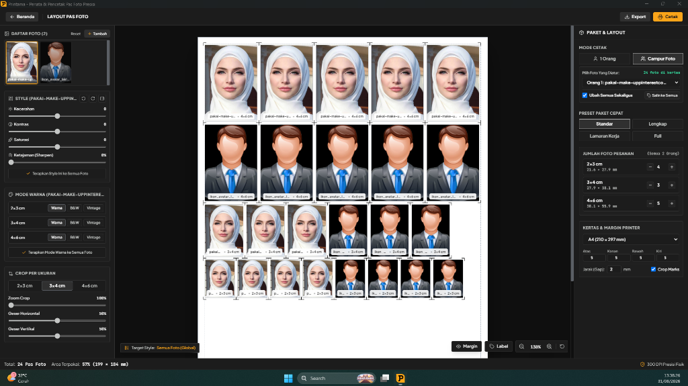

Penata & Pencetak
Pas Foto, KTP, & Polaroid.
Aplikasi desktop cerdas penata pas foto presisi, cetak fotokopi KTP bolak-balik 1:1, dan polaroid studio aesthetic.

100% Offline & Privasi Aman
Seluruh pemrosesan dan rendering berjalan lokal di PC Anda. Foto pelanggan tidak pernah dikirim ke internet atau server luar.
Layout Otomatis & Hemat Kertas
Algoritma cerdas menyusun kombinasi ukuran 2×3, 3×4, 4×6 secara otomatis di kertas A4 & F4 tanpa kalkulasi manual yang membuang kertas.
Ekspor 300 DPI & Cetak Langsung
Kualitas cetak resolusi tinggi siap print ke semua printer inkjet/laser (Epson, Canon, HP, Brother) dengan garis batas potong rapi.
Kompatibel dengan Segala Jenis Printer & Scanner Hardware
Dibuat untuk
kecepatan & presisi.
Printama menggantikan proses rumit mengatur ukuran foto satu per satu di software desain. Hemat waktu kerja operator studio hingga 80%.
1. Layout Pas Foto & Preset Paket
Preset instan: Standar (12 foto), Lengkap (19 foto), Lamaran Kerja (11 foto), dan Full (35 foto) di lembar A4 & F4.
2. Fotokopi & Scan KTP 1:1 Fisik
Ambil gambar langsung dari scanner, tata sisi depan dan belakang presisi ukuran kartu asli tanpa distorsi skala.
3. Studio Polaroid Aesthetic
Cetak foto polaroid 9 foto/lembar dengan pembagian lembar otomatis (auto-pagination) dan 6 pilihan motif background unik.
Kombinasi 2×3, 3×4, 4×6 & 2R Otomatis
Tata puluhan foto dalam satu lembar kertas dengan algoritma penempatan otomatis yang memaksimalkan setiap centimeter kertas tanpa celah terbuang.
Scan Hardware & Tata Letak Kartu Fisik
Ambil gambar langsung dari perangkat scanner (WIA) atau unggah berkas KTP. Sistem otomatis menyejajarkan sisi depan-belakang dengan dimensi fisik 85.6 × 54 mm.
Multi-Sheet Otomatis & 6 Motif Background
Cetak foto polaroid aesthetic default 9 foto/lembar. Kelebihan foto otomatis didistribusikan ke lembar ke-2, ke-3, dst tanpa perlu input ulang.
Keunggulan Teknis Printama
Didesain khusus untuk efisiensi usaha percetakan dan studio foto modern.
Bebas Kuota & Cloud
Tidak bergantung pada internet. Anda bisa mencetak ribuan lembar di lokasi terpencil tanpa khawatir kuota data habis.
Kompensasi Margin Printer
Fitur kalibrasi margin dan batas cetak printer memastikan foto di bagian pinggir kertas tidak terpotong oleh rol printer.
Rendering 300 DPI Tajam
Ekspor langsung ke format PDF Siap Cetak 300 DPI, PNG, dan JPEG tanpa kompresi buram atau pecah.
Mulai Gunakan Printama Sekarang
Unduh gratis untuk PC Windows Anda dan nikmati kemudahan mencetak ratusan pas foto, kartu identitas, dan polaroid dalam hitungan detik.
Komputer Anda masih pakai Windows 7 / 8?
Tersedia build khusus berbasis Electron LTS yang kompatibel 100% tanpa error KERNEL32.dll.